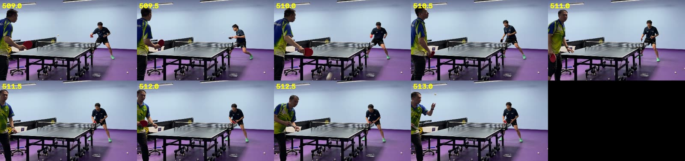
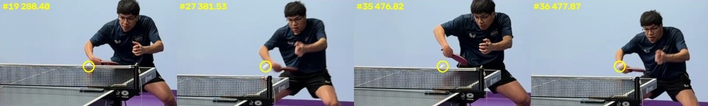
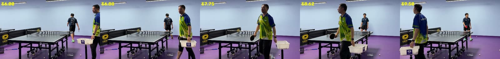
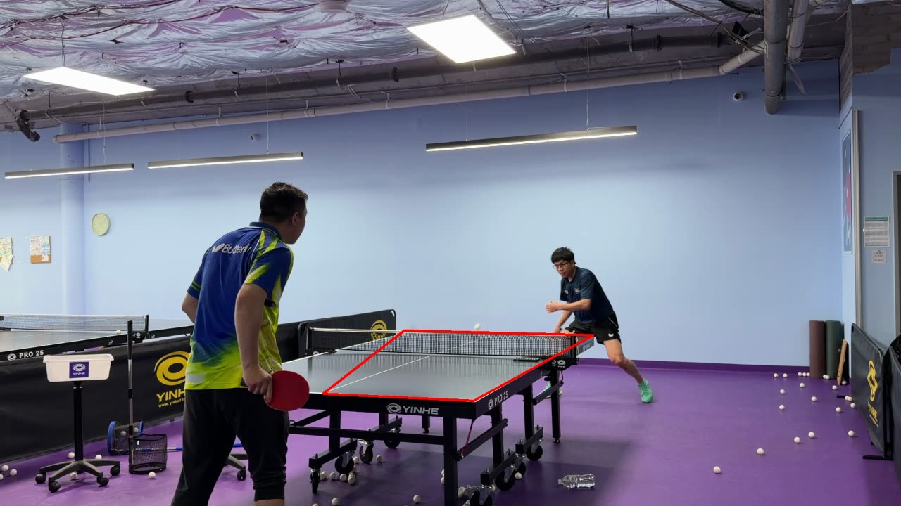
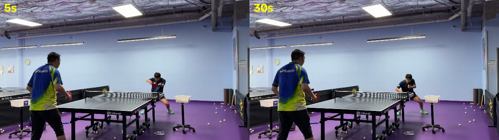

ours音频
- 切出的都是真回合，片段里几乎没有死球。
- 漏掉的 8 个对打回合全是 2.5–4 秒的短分，回合里只检测到 1 次击球，够不上“≥2 拍”的门槛。训练段召回低也是同一原因：发球加一板接发，通常只听到一声。
- 死球后球在地上弹跳的声音会被当成击球，回合尾巴拖长，相邻两分被并成一段（6 处）。
- 片段从第一拍开始，抛球被切掉，所以时间覆盖只有 34%。

把同一段训练视频分别交给我们自己的音频切分（highlight.py）、TTLab、TTcut 和 PingPongVision。第二轮按真正关心的目标评：你（远端学员）的得分球剪到了几个、混进了多少教练得分；第一轮按全部回合评，看保留了哪些回合、漏了哪些、带进了多少死球时间。
只看两段对打。每一分由子代理看画面判输赢，再经你确认：你得 15 分，教练得 5 分，另有 2 分是练习、3 分看不清，均不计。片段盖住这一分结束前 0.5 秒（决定胜负的那一板）才算剪到。
| 工具 | 你的得分球 | 教练得分也被剪入 | 对打段片段 | 含你得分的片段 | 对打段保留 | 每个得分球摊到 |
|---|---|---|---|---|---|---|
| ours | 8 / 15 | 1 / 5 | 22 | 36% | 70s | 8.8s |
| TTLab | 10 / 15 | 4 / 5 | 23 | 35% | 186s | 18.6s |
| TTcut 落台判定 | 4 / 15 | 0 / 5 | 7 | 57% | 44s | 10.9s |
| TTcut 连续运动 | 8 / 15 | 4 / 5 | 14 | 43% | 135s | 16.9s |
它全片报了 57 次落台。逐个看画面后：26 次其实是你的击球瞬间，18 次是你的球落在教练半台，11 次在网口附近或空中，2 次是教练击球。约 77% 和你的球有关。
原因在机位：你站在远端，击球点在画面里正好压在球台远端那条带上，被当成了落台；教练离镜头近，他的击球点在画面里落在球台区域外，几乎不会被计入。所以它实际上是在追你的出手，而不是追落台。

每条横带是一个工具最终导出的片段（已按各自的默认规则加前后余量）。蓝色部分对应真值里在打球的时间，橙色部分是被一起剪进来的死球。悬停查看具体时间。
真值：61 个回合，共 266.5 秒，占全片 48%。每列里最好的一格加了底色。
| 工具 | 片段 | 保留时长 | 回合召回 | 片段精度 | 回合时间覆盖 | 片段内死球 | 一段混 ≥2 分 | 耗时 |
|---|---|---|---|---|---|---|---|---|
| ourshighlight.py 音频回合 | 37 | 105s · 19% | 54% | 100% | 34% | 14s | 6 | 6s |
| TTLab | 40 | 326s · 59% | 85% | 88% | 73% | 131s | 12 | 35s |
| TTcut 落台判定App 默认模式 | 13 | 81s · 15% | 25% | 100% | 25% | 15s | 2 | 834sCPU |
| TTcut 连续运动 | 27 | 302s · 55% | 77% | 89% | 77% | 98s | 12 | 565sCPU |
| PingPongVision纯 CV 回退，非正式成绩 | 0 | 0 | 0 | – | 0 | 0 | 0 | 239s |
回合召回：真值回合里有多少被片段碰到。片段精度：片段里有多少至少含一段真实回合。时间覆盖：真值回合的秒数被片段盖住了多少。耗时为 M2 Pro 实测；TTcut 在 macOS 上只能用 CPU。
视频中间 4 分钟是发球练习和教练喂球，几乎任何运动检测都能命中，会抬高全片数字。做比赛高光，主要看两段对打。格内依次是召回 / 时间覆盖 / 死球秒数。
| 工具 | 对打0:00–2:07 · 11 分 | 发球-接发练习2:07–3:15 · 14 次 | 教练喂球3:15–6:15 · 22 次 | 对打6:15–9:11 · 14 分 |
|---|---|---|---|---|
| ours | 55% / 40% / 1s | 29% / 7% / 3s | 55% / 28% / 4s | 79% / 50% / 6s |
| TTLab | 100% / 98% / 35s | 93% / 72% / 16s | 82% / 64% / 37s | 71% / 68% / 44s |
| TTcut 落台 | 27% / 32% / 4s | 0 / 0 / 0 | 36% / 34% / 6s | 29% / 22% / 5s |
| TTcut 连续运动 | 18% / 15% / 1s | 86% / 78% / 21s | 86% / 87% / 36s | 100% / 100% / 42s |
| 工具 | 它认为最好的 | 对照真值 |
|---|---|---|
| ours | 60 秒窗口 7:39.5–8:39.5 | 窗口内 38 秒在打球，6 个完整回合，最长 10.5 秒；在全片所有 60 秒窗口里排前 7.5%。 |
| TTLab | 17 个高光回合，分最高的是 0:56.5 | 0:56.5–0:59.2 是死球，两人拿着球筐走动。按分数取的前 5 个都不在真值最长的 5 个回合里。 |
| TTcut | 落台次数 / 回合时长 | 落台模式前 5 个命中 0 个真值最长回合，连续运动模式命中 1 个。 |




音频精度高、几乎不带死球；视觉召回高但时好时坏。用“球在飞”的视觉信号定回合起止，再用击球声剔除没有击球的片段、数拍数。
把“≥2 拍”放宽成“1 拍 + 视觉确认有球飞行”，可以补回漏掉的 8 个对打短分。
落点在球台以外、或间隔不符合来回节奏的“击球”剔除掉，能修复回合拖尾和两分合并。球台标定可以借 TTcut 那类模型。
现在从第一拍开始切，发球被切掉了。
TTLab 的打分和 TTcut 的落台计数都挑不出好片段。我们的“拍数^1.5 窗口”相对最好，但仍然只衡量了打得多，没有衡量打得好。
三个工具各自导出的片段已拼成视频，左上角标出片段序号和对应的原片时间，左下角按真值标出“打球中”或“死球”。文件在本机下载目录：